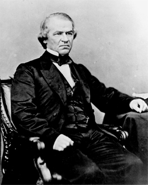
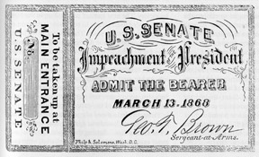

|
On February 25, 1868 the House Managers of Impeachment, led by Thaddeus
Stevens, appeared before the U.S. Senate to present 11 articles of impeachment
against President Andrew Johnson. Their case rested on Johnson's removal of
Secretary of War Edwin M. Stanton from office, but really grew out of a
political struggle between Johnson and Congress over reconstruction. The
sensational trial brought the national government to a halt for three months. On
May 26, 1868, the Senate voted 35 to 19 to convict Johnson, only one vote short
of the two-thirds necessary to remove him from office. Johnson was acquitted,
but his effectiveness as a leader was destroyed.
When Vice President Andrew Johnson assumed the office of president in April
1865 after Lincoln's assassination, he enjoyed the united support of the
northern leaders and citizenry. Johnson, a Democrat who was the wartime governor
|

Andrew Johnson
|
of Tennessee, appeared on the 1864 ticket to broaden the appeal of the
Republican Party beyond its traditional base. Johnson's deep hatred of the
southern slave holding class was widely known. Radical Republicans, a strong
wing of the party led by Charles Sumner of Massachusetts, had good reason to
assume Johnson agreed with their harsh position on Reconstruction. They
believed, as did the majority of more moderate Republicans, that congress and
the executive would work together well to determine the process of incorporating
the Southern states back into the Union.
Johnson was no stranger to Congress. He had served on the Joint Committee on
the Conduct of the War with Benjamin Wade, Zechariah Chandler, and George
Julian, all Radical Republicans. Ominously, although a staunch Union man who
favored emancipation, he had never supported an agenda that included black
suffrage and civil rights. His sympathies were for the plain white farmers of
the South and his beliefs were those of a typical Democrat including desiring a
small national government and the upholding of states' rights. He loudly
proclaimed that he would follow in his predecessor's footsteps toward a lenient
and merciful reconstruction policy. Unfortunately, Johnson was sorely lacking in
Lincoln's political skills. Called by some the "accidental president" he was
inflexible, stubborn, and in the end, self-destructive. Understandably, Johnson
wanted to control reconstruction from the White House, but his many vetoes
together with his adamant refusal to compromise with Congressional Republicans
brought catastrophic results for the nation.
Johnson's earliest policy moves alarmed the Republican-dominated Congress. He
readmitted Virginia with only a few restrictions, and on May 29, 1865 issued a
Proclamation of Amnesty, setting in motion an incredibly liberal policy of
pardons for ex-Confederates. The new president had initiated a heated struggle
over the control of Reconstruction that eventually led to his impeachment.
Johnson supported the restoration of landed property to ex-Confederates, and
early in 1866 vetoed the Freedmen's Bureau Bill. Throughout this period many
Republicans grew increasingly alarmed, but did not break with the White House,
hoping to work out an agreement before the fall elections. Only when the
President vetoed the Civil Rights bill and made known his opposition to the
proposed 14th Amendment, did congressional Republicans declared an open war and
take their case to the voters.
The fall elections of 1866 went badly Johnson and his supporters. Radical and
moderate Republicans were united, and now had the power to act on their desire
to end Johnson's obstructionist stance on reconstruction. Congress intended to
halt the widespread removal of Republicans from government positions by Johnson.
The first step was to deprive the president of his patronage powers. Early in
1867, the Tenure of Office Act passed. In the same session, Congress also
passed legislation to limit Johnson's influence over the military. Still not
finished, Congress, over a presidential veto, initiated the Reconstruction Act
that established military governments throughout the South. Congress and the
President were declared enemies. Republicans hoped to force the South to
accept universal male suffrage and the 14th Amendment. Johnson, horrified by
what he described as a blatant violation of the Constitution, fought hard to
stop the legislation, and employed the veto. These policies, the president also
believed, would severely hinder the South's recovery. Congress overrode his veto
with ease. Johnson's fierce opposition, however, threatened their future
reconstruction plans. Impeachment talk was becoming common within congressional
chambers.
In December of 1867 the House of Representatives began the impeachment
proceeding against Johnson. This time, they were unsuccessful. The newly elected
President of the Senate, Radical Republican Benjamin Wade was determined to
pursue impeachment. Over the following year, Wade directed a Congress that set
its reconstruction policy in motion without hesitation. Yet another
reconstruction bill passed over Johnson's veto. The President's response was
twofold. First, he outwardly complied with their policy, but made sure that the
military governors of the reconstructed South were conservative, and blocked
effectively the Republican's agenda. Second, Johnson removed Radical sympathizer
Secretary of War Edwin Stanton from office, a defiant challenge to the Tenure of
Office Act. Every Republican felt that the President went too far. Despite the
seriousness of the situation, a comic element surfaced as Congress and the
President alternately fired and rehired Stanton.
Congress reinstated Stanton to his Cabinet post in February of 1868. Johnson
brazenly defied that body by again ordering the Secretary's dismissal. He
replaced Stanton with former Union general Lorenzo Thomas. His bold action
brought swift reaction. Within days, the House of Representatives voted for
|

A ticket for entry into the Senate's impeachment hearings
|
impeachment of President Andrew Johnson for "high Crimes and Misdemeanors."
Naturally, the vote was along strict party lines. The first eight articles of
impeachment, that were the heart of the case, focused on the President's alleged
violations of the Tenure of Office Act. On February 25, the Senate initiated
its proceedings, and the trial began on March 30. Chief Justice Salmon Chase
presided over the trial, and, to his credit, struggled to govern the process in
a fair and impartial manner.
The political subtext of the trial was the fight over reconstruction policy.
Johnson's able defenders, including former Associate Justice Benjamin R. Curtis,
argued correctly that the Tenure of Office Act was clearly unconstitutional. The
Republicans, meanwhile, attacked the President's opposition to their policies
for the Southern states. Their primary concern was that Johnson was subverting
the Union victory in the war. By May 6, the arguments had concluded, and only
the vote remained. As it turned out, none of the articles of impeachment would
pass, and a motion to adjourn the trial was offered and adopted. Seven
Republicans voted against impeachment.
Johnson had survived the trial, and the Republicans searched for
explanations. Many Congressmen came to believe that the case against Johnson
lacked proof that he had undermined the Constitution since Lincoln had appointed
Stanton. Others distrusted the intentions of Benjamin Wade, next in line for
the presidency should Johnson's impeachment be successful. Wade's extreme
position on reconstruction, and his almost obsessive pursuit of Johnson worried
many of the moderate Republicans. In the end, the spectacle of the trial and
Johnson's acquittal had serious consequences. The Radicals' moment had ended.
Northerners felt sorry for Johnson, and preferred a more modest approach to
reconstruction. Ulysses S. Grant, the choice of the moderate majority of the
Republican Party, was the candidate for president in 1868. Johnson's acquittal,
then, signaled the beginning of the Radical's quick political decline.
Significantly, the fact that Johnson remained in office emboldened
ex-Confederate leaders to oppose the reconstruction of their states that would
be imposed from 1868.
Source: Joan Waugh, ed., Facts on File Encyclopedia of American
History: Civil War and Reconstruction, 1856 to 1869 (New York: Facts on
File, 2003), 177-79.
|